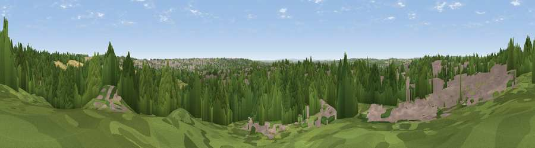

Viewpoint near Bestwood Village
#23899 in England · top 23% of its area beats it · near Bestwood Village · path 117 mWhere it is
The exact computed spot (SK 56825 46475). Click the marker for map links.
Public access: the nearest public right of way is about 117 m away — the final stretch may cross private land. Computed from Natural England's CRoW access layer and OpenStreetMap rights of way — not the legal definitive map. Always verify locally.
The view, rendered

A 360° render of this exact spot computed from the terrain model, tree cover and land cover — summer colours, afternoon light, calibrated against photographs of famous viewpoints. Real trees, hedges and buildings will differ in detail.
The panorama
Grey silhouette: terrain skyline in each direction (720 bearings, Earth curvature and refraction included). Dashed green: skyline with trees (+15 m) and buildings (+8 m) as obstacles. Blue strip: how far the ground is visible on each bearing.
Where the view opens
Wedge length = distance to the farthest visible ground on that bearing (vegetation-aware). Rings at 10, 25 and 50 km.
What fills the view
46% woodland · 32% built-up · 14% grassland · 8% cropland
Angular shares of the visible panorama (visual magnitude), not map area. Landscape diversity 0.52 (0–1 Shannon).
Key numbers
More beautiful places nearby
The staircase of upgrades: each row has a higher view potential than everything closer. Driving times are estimates from straight-line distance, calibrated against real road routing — check an actual route before setting out.
| Place | Direction | Drive | Score |
|---|---|---|---|
| Viewpoint near Arnold | ENE · 3 km | ~7 min | 64.1 |
| No Man's Lane | SW · 14 km | ~26 min | 65.8 |
| Burstheart Hill [Thoresby Colliery] | NNE · 23 km | ~37 min | 69.3 |
| Crich Stand | WNW · 24 km | ~39 min | 73.0 |
| Alport Height | WNW · 27 km | ~43 min | 73.9 |
| Viewpoint near Woodhouse Eaves | S · 32 km | ~50 min | 77.7 |
| Viewpoint near Mow Cop | W · 72 km | ~95 min | 78.9 |
| Viewpoint near Mow Cop | W · 72 km | ~95 min | 80.2 |
53.01257, -1.15448 · source: screening · position refined by local search. Computed location — check access rights before visiting.